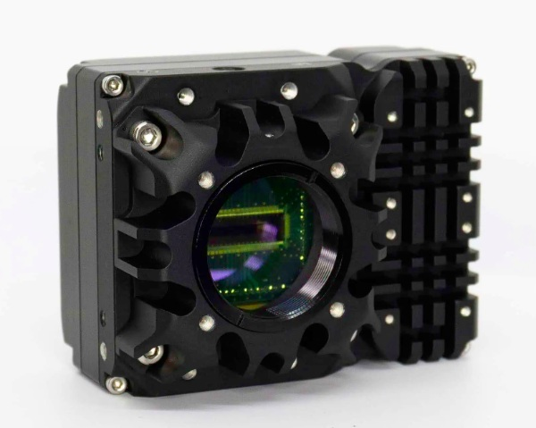

厳選ニュース / 活用トピックス
01.【廃棄物火災防止】 コンベア停止ゼロでリチウム電池を94%検知、PFU・IHI検査計測がX線×AIシステムを提供開始 (2025年10月31日)
株式会社PFUと株式会社IHI検査計測は、廃棄物処理施設のベルトコンベア上を流れるごみ袋内のリチウムイオン電池を自動検知するX線×AIシステム「Raptor VISION BATTERY」および「LiB検知システム」の提供を開始しました。デュアルエナジーX線透過画像と独自AIで実証実験にて検知率94.0%を達成し、プロジェクター照射とディスプレイで作業者へ電池位置を即時通知します。
なぜ重要か：
- 搬送タクトの完全維持： 静止撮影や人手の目視選別に依存していた従来の検査と異なり、連続搬送ラインの速度を落とさずに破砕前スクリーニングを完遂できます。
- 破砕機火災の元凶を水際排除： 破砕前に発火源となる電池を特定・除去することで、年間1万件超に上る処理施設の発火事故や設備焼損による長期操業停止を未然に防ぎます。
02.【重大事故・自治体被害】 リチウム電池混入火災で広域処理施設が長期停止、復旧工事費は約42.5億円見込みに (2026年4月25日公表)
2024年12月に茨城県守谷市の広域ごみ処理施設「常総環境センター」で発生したリチウムイオン電池起因と推察される火災により、不燃ごみ処理施設が甚大な被害を受け操業を停止しました。守谷市の公表資料によると民間事業者への代替処理委託が続いており、復旧工事費は約42.5億円（2027年9月末復旧見込み）に達しています。
なぜ重要か：
- 破砕ライン被災の巨額コスト： 破砕機内で押し潰されたバッテリーから出火して施設全体に延焼すると、数十億円規模の復旧費用と数年単位の処理停止という深刻なインフラ麻痺に直結します。
- 水際インライン検知の不可避性： 分別啓発や人力選別のすり抜けによる混入リスクをゼロにするのは困難であり、破砕工程の直前で電池を機械的に検知・排除する自動検査投資が不可欠となっています。
03.【先端半導体・3D実装】 Onto Innovation、HBM・ハイブリッドボンディング向けに「高速赤外線（IR）全数ウェーハ検査」を展開 (2025年8月26日)
半導体プロセス制御大手のOnto Innovationは、AI向けHBM（広帯域メモリ）や3D積層パッケージのハイブリッドボンディング工程向けに、高速赤外線（IR）検査によるインラインプロセス制御ソリューションを発表しました。シリコンを透過する赤外線を用いることで高スループットを維持したまま100%全数検査を実現し、接合面の内部ダイクラックや誘電体層内のわずか2μmの微小ボイドを非破壊で検出します。
なぜ重要か：
- X線CTの速度限界を突破した100%全数検査： 計測に長時間を要し抜き取り検査に留まりがちだった従来手法の速度ボトルネックを解消し、量産ラインのスループットを落とさずに全数透視を実現します。
- 多層積層チップの歩留まり直撃欠陥を捕捉： シリコンが赤外線を透過する物理特性を活かし、アニーリング前後の微小ボイドや層間クラックを早期特定して後工程への不良流出を防ぎます。
04.【食品安全・異物混入】 ニチレイフーズ×ソニー、SWIR分光カメラとAIによる「透明プラスチック異物」検査装置を本稼働 (2026年8月31日)
株式会社ニチレイフーズは、ソニーセミコンダクタソリューションズ製の短波長赤外（SWIR）イメージセンサーを搭載したマルチバンド分光カメラとAI技術を活用した異物検査装置を開発し、船橋工場の原材料受け入れ工程で本稼働を開始しました。食品と樹脂の固有な波長吸収特性の差を捉え、従来のX線検査機や金属探知機で見逃されやすかった透明プラスチック片やビニール片をインラインで自動検知します。
なぜ重要か：
- 密度差検査の死角を解消： 金属探知機に反応せず、低密度のためX線が透過してしまう軟質透明樹脂やフィルム片を、光学スペクトル吸収の差異によって高精度に識別します。
- 放射線レスの高速ライン構築： 厳重な鉛遮蔽や放射線管理区域の設定を伴うX線装置を使わず、既存の食品搬送ラインへ省スペースかつ安全に組み込めます。
05.【EVバッテリー重大事故】 GM「Bolt EV」大規模リコール拡大、サプライヤー製造欠陥の是正と全数検査を徹底 (2021年8月20日)
米General Motors（GM）は、バッテリーセル内部に2つの稀な製造欠陥（負極タブの裂けとセパレーターの折れ曲がり）が同時に存在する場合に車両火災に至るリスクがあるとして、2017〜2022年モデルの「Chevrolet Bolt EV / EUV」を対象としたリコール拡大を発表しました。これに伴い、GMとサプライヤーのLGは欠陥根絶に向けた製造工程の抜本改修および非破壊検査体制の厳格化を実施しました。
なぜ重要か：
- サブミリ単位の内部欠陥が招く巨額損失： 外観検査では判別できないセル内部の極板・セパレーターの微細な異常が熱暴走を引き起こし、大規模リコールやブランド信頼の毀損に直結します。
- インライン全数スクリーニングの業界標準化： 抜き取りサンプリングでは稀な複合欠陥の流出を防げないことが証明され、EV電池量産ラインにおける高分解能X線や光学式インライン全数検査の必須化を決定づけました。
06.【非破壊検査・モジュール組立】 edevis、レーザーサーモグラフィ「LTvis」でEVバッテリー溶接部を非接触・インライン検査 (2026年公開仕様)
FOERSTERグループ傘下の非破壊検査大手edevisは、EVバッテリーのセル接続部やハウジングのレーザー溶接・はんだ接合部向けに、レーザー励起アクティブサーモグラフィシステム「LTvis」を展開しています。ダイオードレーザーまたはファイバーレーザーで溶接部を局所加熱し、内部の熱拡散の乱れを高解像度赤外線カメラでリアルタイム解析することで、内部ボイドやクラック、溶け込み不足を非接触・インラインで自動判定します。
なぜ重要か：
- ドライ環境での高速・非接触インライン検査： 接触媒質（水やゲル）が必要な超音波探傷や大型遮蔽が必要なX線装置を使わず、完全非接触の光学システムのみで量産ラインの高速検査に対応します。
- 大電流ラインの接合信頼性を保証： バスバーやセルタブの溶接不良による局所発熱・火災リスクを組立工程内でリアルタイムに排除し、EVバッテリーパックの安全性を高めます。
ピックアップ製品・ソリューション
NIT (New Imaging Technologies)「LiSaSWIR 2048」
超高速110kHz駆動 × InGaAsセンサが実現する「ラインを止めない」SWIRラインスキャン

なぜ重要か：
- 高速搬送ラインの検査ボトルネックを解消： フル解像度2048pxで110kHz以上の超高速ラインレートを実現し、半導体パッケージングから食品異物・電池部材の非破壊検査まで、製造スピードを落とさずに全数インライン検査を導入できます。
現場課題への解決アプローチ：
- シリコン透過から透明樹脂・水分吸収まで1台で捕捉： 波長0.9〜1.7µmの広帯域と高感度（Peak QE > 80%）により、半導体3D実装の内部ボイドやX線では見逃しやすい透明プラスチック異物・部材異常を高SN比で識別します。
- 最短1µsシャッターで高速コンベアでもブレを排除： 連続搬送ラインが超高速で稼働していても、1µsの超高速露光によって被写体ブレのない鮮明な透過・分光画像を取得します。
- カメラ内オンボード補正でシステム負荷を軽減： 欠陥画素補正（BPR）や不均一性補正（NUC）をカメラ内部でリアルタイム処理し、24時間稼働の量産ラインにおける安定運用を支援します。
| センサー / 画素構成 |
自社製 InGaAs「NSC2301T-SI」 / 2048 × 1 pixels (8µm × 14µm) |
| 最大ラインレート |
> 110 kHz (フル解像度時) / 最短露光時間: 1 µs |
| 感度波長域 (SWIR) |
0.9µm 〜 1.7µm (Peak QE > 80%) |
| 読出ノイズ特性 |
< 90e- (High Gain), < 370e- (Medium Gain), < 2200e- (Low Gain) |
| インターフェース |
CameraLink Base / GenCP (GenICam) 準拠 |
| 外形寸法 / 重量 |
35.4 × 75 × 68 mm / 280g (動作温度: -40℃〜+71℃) |